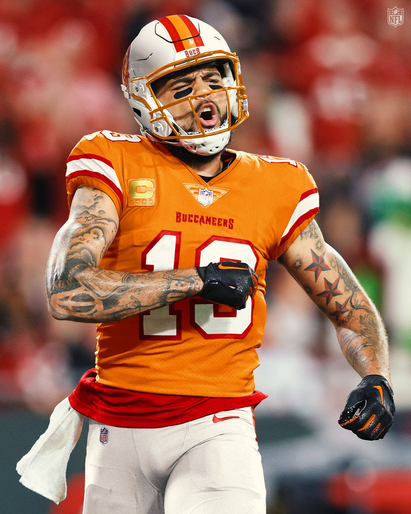
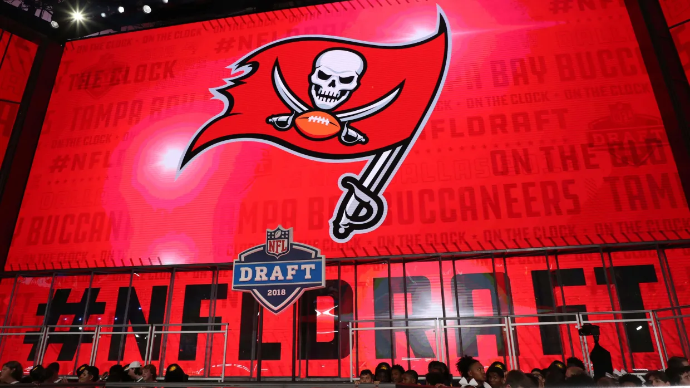

Per Jenna Lane of ESPN, Bucs Pro Bowl ILB entering his 5th season formally requested a trade from the team on April 11th after the team picked up his 5th year option with no contract extention stating that he was "fed up" and frusterated with the team's contract negotiations.
Buccaneers general manager Jason Licht said on April 13th that the team has "no intention" of trading the star LB despite his trade request.
Licht expects White to be on the roster and play in 2023 with a chance to prove himself.
Throwback Uniforms Will Return in 2023

The famous Buccaneers throwback uniforms nicknamed the "Orange Creamsicle Uniforms" with Bucco Bruce on them will make an appearance in at least one game in the 2023 season.
These uniforms haven't been worn since the 2012 season.
Below is the video that the team posted on April 12th to announce the return of the uniforms:
Looking Ahead to the 2023 NFL Draft and Bucs Needs

The 2023 NFL Draft will be held in Kansas City on April 27-29.
With the draft just weeks away let's look at some of the top needs of Buccaneers and the top prospects at those positions.
Cornerback/Safety
Christian Gonzalez, Oregon (CB)
Devon Witherspoon, Illinois (CB)
Joey Porter Jr., Penn State (CB)
Brian Branch, Alabama (S)
Cam Smith, South Carolina (CB)
Outside Linebacker/EDGE
Will Anderson Jr., Alabama
Tyree Wilson, Texas Tech
Lukas Van Ness, Iowa
Nolan Smith, Georgia
BJ Ojulari, LSU
Offensive Tackle
Peter Skoronoski, Northwestern
Paris Johnson Jr., Ohio State
Darnell Wright, Tennessee
Anton Harrison, Oklahoma
Broderick Jones, Georgia
Quarterback
Bryce Young, Alabama
C.J. Stroud, Ohio State
Anthony Richardson, Florida
Will Levis, Kentucky
Hendon Hooker, Tennessee
Running Back
Bijan Robinson, Texas
Jahmyr Gibbs, Alabama
Zach Charbonnet, UCLA
Devon Achane, Texas A&M
Roschon Johnson, Texas
The Buccanneers will have 9 picks in the 2023 NFL Draft. Let's take a look at the break down of how many picks the Bucs have in each round.